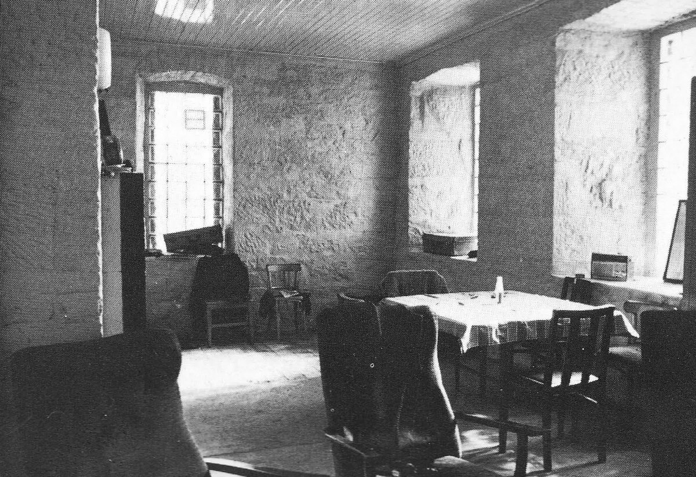

01 · Later occupation; exact date unresolved
Living and dining room
Deep splayed window recesses, a boarded ceiling and a communal table in a plain working room.
Use: Study the recess depth, wall mass, ceiling construction and economical furniture arrangement. Confirm geometry against original domestic plans before changing the layout.
Period boundary: Glass-block glazing, radio, electric fittings and later upholstered chairs. The weathered finish is not a reference for a recently built 1901 station.
Source, date and confidence
The download mirror captions this view circa 1971. McCloskey's indexed page dates its corresponding room views to the 1960s. The retained filename follows that earlier lead and does not establish the date.
Ron Ireland is credited for the related interior photographs on Keith McCloskey's author page. The original image-to-image match remains unverified because that site did not resolve during retrieval.
Photograph identified as Flannan interior by the mirror; exact date, photographer match and continuity of each fitting are not independently established.
Source page · Downloaded image
1200 × 824 · ireland-room-1960s.jpg
Original pixels retained; click the photograph to inspect the full file.